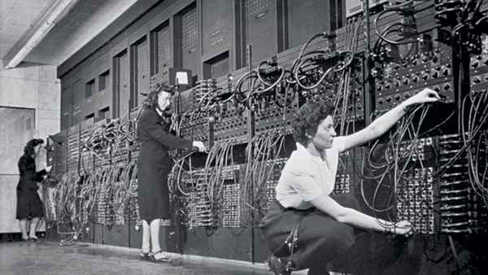

Fue un matemático, lógico, informático teórico, criptógrafo, filósofo, biólogo teórico, maratoniano y corredor de ultradistancia británico.Es considerado uno de los padres de la ciencia de la computación y precursor de la informática moderna.
1946 ENIAC.
Fue una de las primeras computadoras de propósito general. Era Turing-completa, digital, y susceptible de ser reprogramada para resolver "una extensa clase de problemas numéricos".

1969 Arpanet.
Fue una red de computadoras creada por encargo del Departamento de Defensa de los Estados Unidos para utilizarla como medio de comunicación entre las diferentes instituciones académicas y estatales.
Era de los Negocios
1972 Nacimiento del InterNetworking Working Group.
Fue un grupo de destacados investigadores en ciencias de la computación en la década de 1970 que estudiaron y desarrollaron estándares y protocolos para redes de computadoras.
1979 Creación los primeros NewsGroups. Foros estudiantiles.
Medio de comunicación dentro del sistema Usenet en el cual los usuarios leen y envían mensajes textuales a distintos tablones distribuidos entre servidores con la posibilidad de enviar y contestar a los mensajes.